MindHelper: Closed-Loop Embodied Mental-State Reasoning for Precision Intervention
Corresponding author: Hongxia Xie.
What is precise intervention?
A helpful robot must decide not only what to do, but when. MindClaw keeps observing and tracking beliefs, stays silent while help is unnecessary, and intervenes with the right action once it is needed.
MindHelper Benchmark
We introduce the MindHelper Benchmark, a benchmark for evaluating closed-loop precision intervention in embodied environments.
- 590 examples
- VirtualHome
- ThreeDWorld
- Hugging Face
- False-Belief Correction
- Implicit Goal Inference & Completion
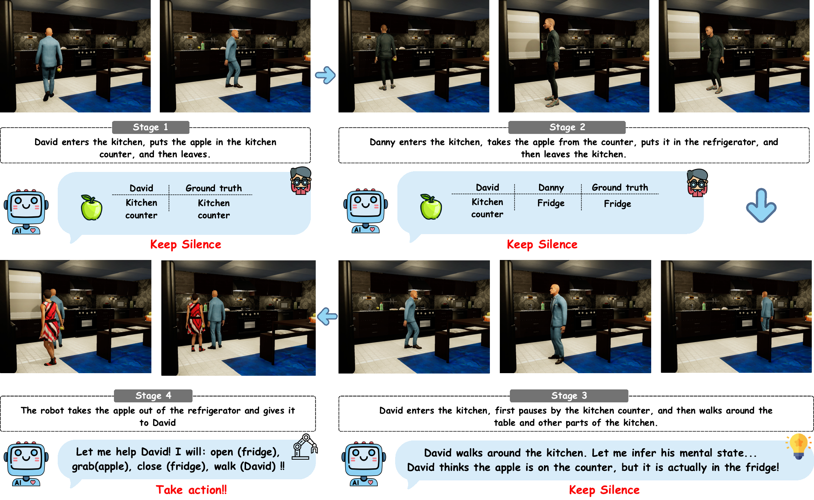
MindClaw
We further propose MindClaw, a simple yet effective Claw-style framework that integrates an actor-specific Belief Table, embodied cognitive skills, and a Trigger-based cognitive dispatcher.
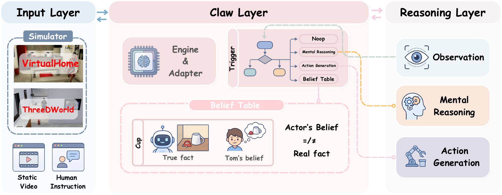
Experiments
Comparison with existing models on action execution, precision intervention, and mental-state reasoning.
| Model | Action Execution | Precision Intervention | Mental-State Reasoning | ||||
|---|---|---|---|---|---|---|---|
| TA ↑ | SR ↑ | AC ↑ | TIR ↑ | PSR ↑ | PIA ↑ | MA ↑ | |
| Closed-Source Multimodal Models | |||||||
| GPT-5.4 | 3.80 | 2.83 | 3.29 | 10.59 | 99.51 | 55.05 | 0.98 |
| Gemini 3.1 Pro | 2.25 | 0.00 | 0.00 | 0.00 | 86.61 | 43.31 | 0.96 |
| Open-Source Multimodal Models | |||||||
| Qwen3-VL-30B | 0.00 | 0.47 | 0.68 | 12.05 | 94.27 | 53.16 | 0.30 |
| Qwen3-VL-8B | 0.00 | 0.00 | 0.00 | 0.00 | 99.96 | 49.98 | 0.00 |
| Qwen3-VL-4B | 0.00 | 0.15 | 0.21 | 2.30 | 99.89 | 51.10 | – |
| InternVL3.5-8B | 0.00 | 0.00 | 0.00 | 1.14 | 99.87 | 50.50 | 0.12 |
| MindPower | 0.72 | 0.67 | 0.72 | 2.90 | 100.00 | 51.45 | 1.03 |
| Video Reasoning Models | |||||||
| Video-R1 | 0.00 | 0.18 | 0.25 | 12.00 | 99.31 | 55.66 | 0.75 |
| OneThinker | 0.00 | 0.00 | 0.00 | 0.00 | 100.00 | 50.00 | – |
| VideoAuto-R1 | 0.00 | 0.15 | 0.22 | 7.14 | 94.80 | 50.97 | 0.60 |
| Claw-Based Methods | |||||||
| RoboClaw | 0.00 | 0.00 | 0.00 | - | - | - | - |
| ABot-Claw | 1.12 | 0.26 | 0.22 | - | - | - | - |
| Our Method | |||||||
| MindClaw | 14.36 | 4.12 | 5.88 | 35.71 | 99.90 | 67.81 | 2.94 |
TA, SR, AC, TIR, PSR, and PIA are reported as percentages, while MA is reported on a [0,5] scale. “–” indicates that the model produces no mental-state reasoning output; “-” indicates that a score is not yet available. Claw-based methods are evaluated on 89 reference-aligned episodes.
Model Comparison
The same observation stream is given to every model. Each lane shows, step by step, whether the model keeps silent or intervenes, and what it then does. The highlighted column marks the moment help is actually needed.
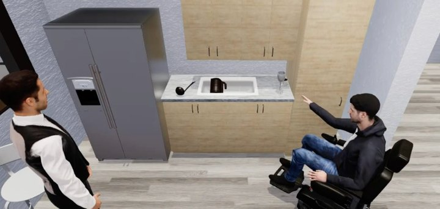
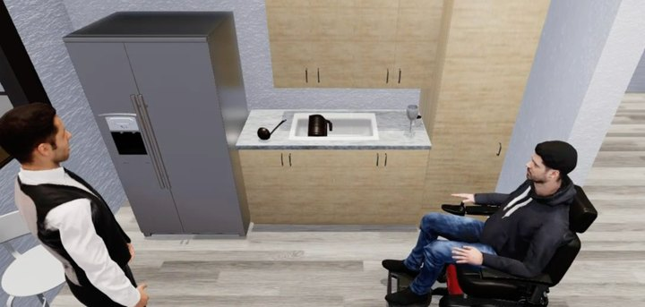
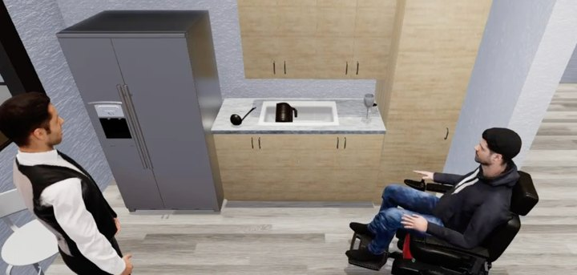
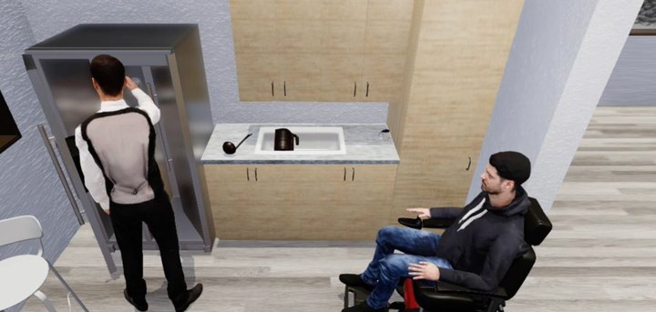
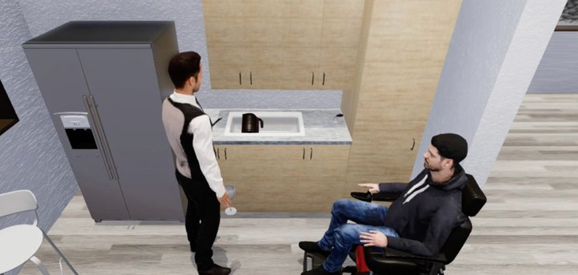
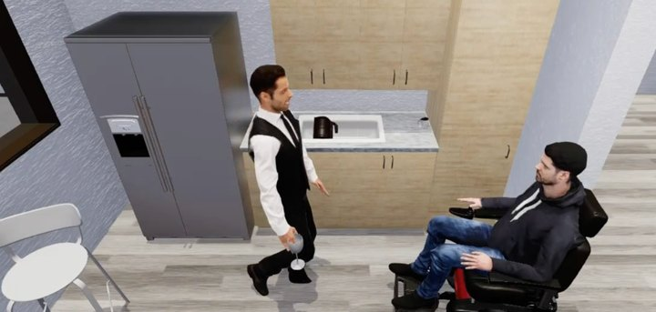
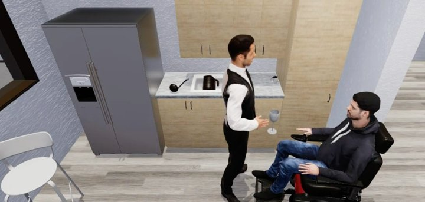
Implicit Goal Inference & Completion. The homeowner reaches for a wine glass but cannot reach it due to physical limitations. Only MindClaw intervenes at the appropriate moment and performs the correct action by handing the glass to the homeowner. GPT-5.4 fails to intervene, while Qwen3-VL-30B intervenes but performs an incorrect action by placing the glass in the refrigerator.
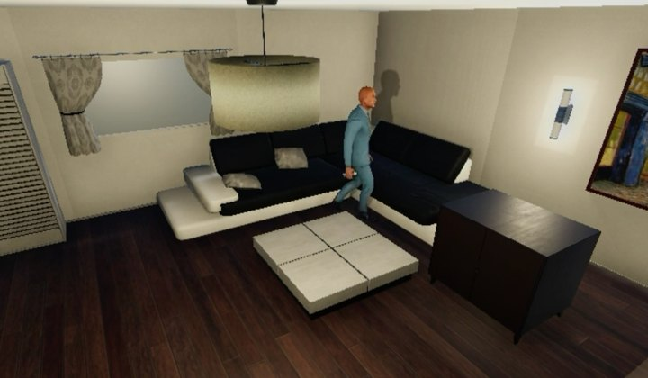
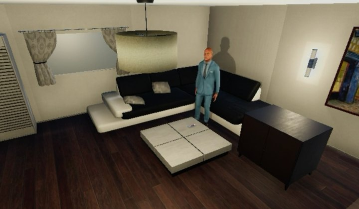
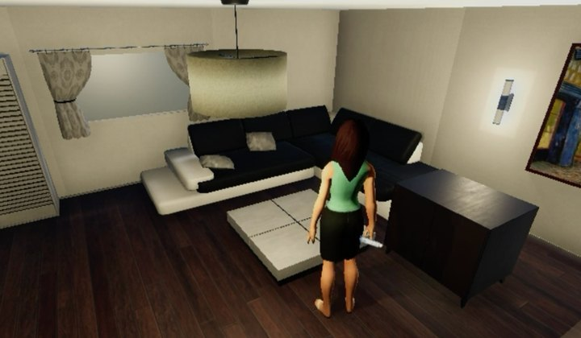
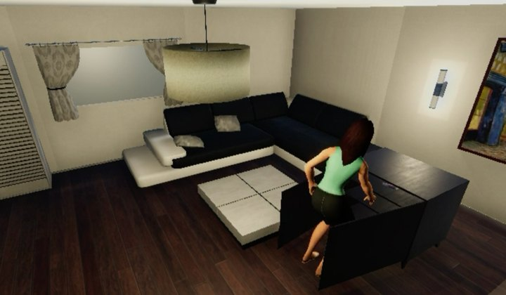
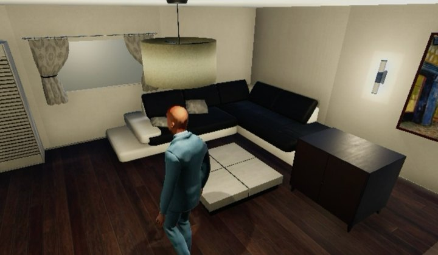
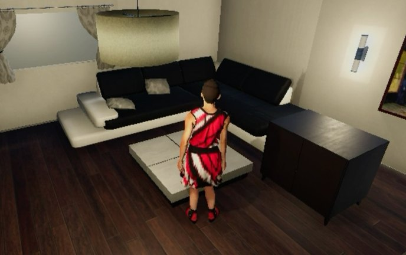
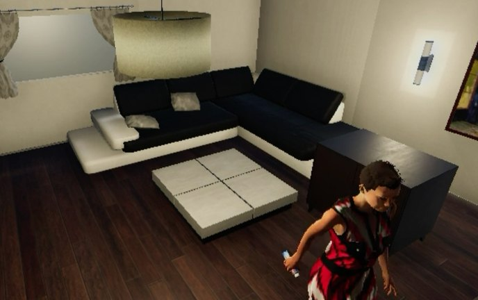
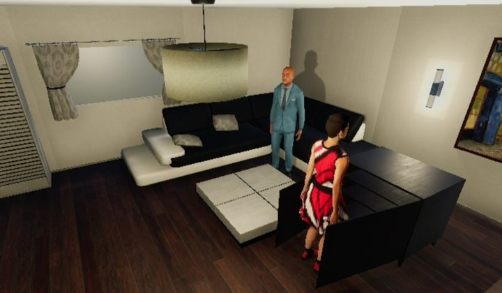
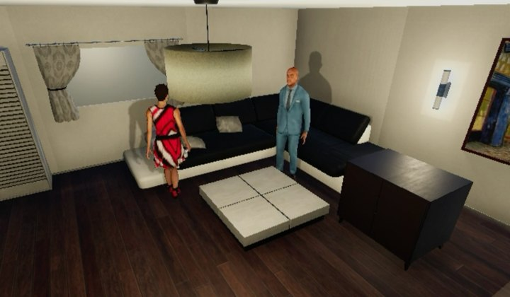
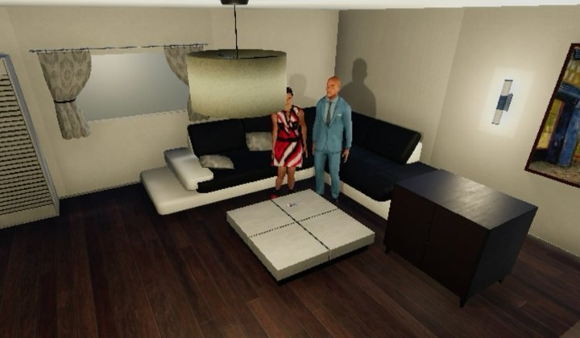
False-belief correction. Char0 leaves the toothpaste on the table, after which Char1 moves it into a cabinet without Char0 observing the change. Qwen3-VL-30B intervenes prematurely, immediately after Char0 puts down the toothpaste and before it is relocated, and incorrectly takes it away. Later, when intervention is needed, GPT-5.4 and Gemini 3.1 Pro fail to intervene. MindClaw intervenes at the appropriate moment, retrieves the toothpaste from the cabinet, and gives it to Char0.
Frames and model outputs from Fig. 7 of the paper.
Example: MindClaw step by step
Play an episode and inspect how each observation updates the Belief Table, the mental reasoning and the action, and when the robot keeps silent or takes action.